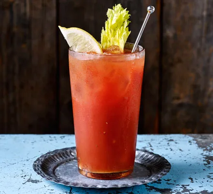

Bloody Mary

Description
Learn how to make the ultimate bloody mary with our easy recipe.
Turn up the Tabasco spice or dial it down to mix this classic vodka cocktail to your taste
- 100ml vodka
- 500ml tomato juice
- 1 tbsp lemon juice + 2 slices to serve
- Worcestershire sauce
- Tabasco sauce
- pich celery salt
- pinch black pepper
- 2 celery sticks, to serve
Steps
- Place the ice in a large jug. Measure the vodka, tomato juice
and lemon juice and pour it straight onto the ice.
- Add 3 shakes of Worcestershire sauce and Tabasco (or more if you like it very spicy) and a pinch of celery salt and pepper. Stir until the outside of the
jug feels cold, then strain the cocktail into 2 tall glasses.
- Top up with fresh ice, add a
celery stick and lemon slice to both glasses and enjoy.
Return home